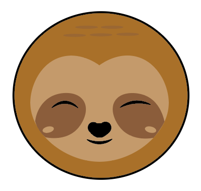
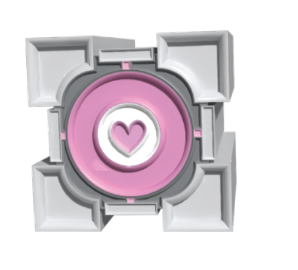
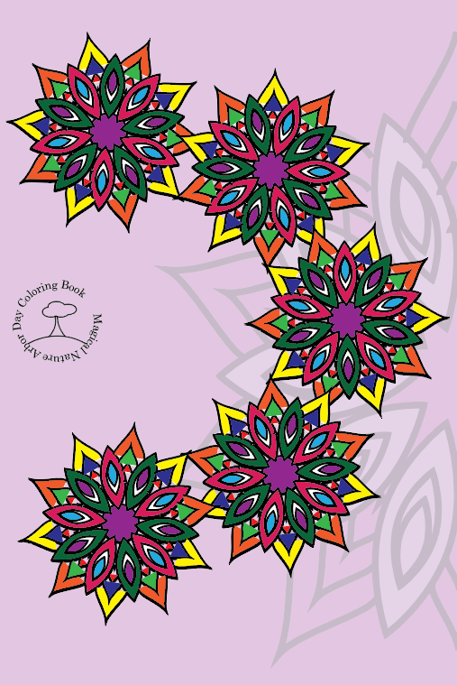
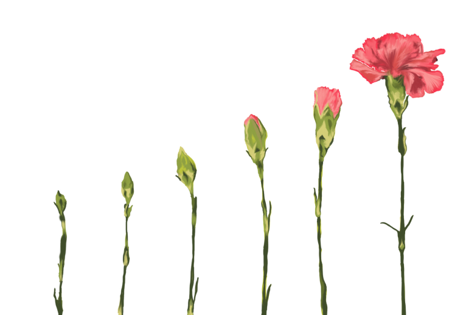

Education
I started my design degree pathway with Seminole State College and I am currently in my second year of classes. This is my second time taking college classes as my first time around I took business management courses but it was unfortunately not the right fit for me. Coming back for the first time in a couple years, I am greatly enjoying my time in the design program, learning a lot and making great progress.
Previous Works




Experienced With...
- Photoshop
- Illustrator
- InDesign
- Canva
- Word
- Excel
- Outlook
- Powerpoint
- Visual Studio
Skills
- I have dabbled in different art styles and methods since I was a very young child. Starting with basics like finger painting and crayon coloring and moving on to things like painting and drawing free handed. In more recent years I have progressed into a more digital art style, with programs like Illustrator and Photoshop, one of my favorite passtimes is digital painting. I have worked with multiple groups of partners to create different brand logos and media packages as well as on my own to create things like personal advertisements and digital media for friends.